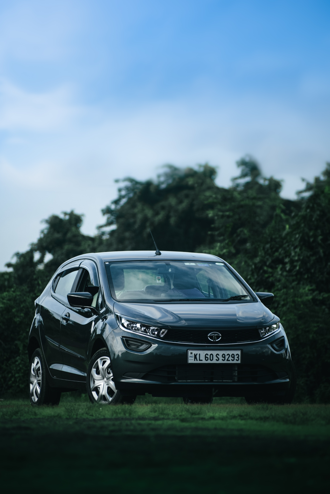

Listings
Maruti 800

Maruti 800: Iconic, affordable, compact car from Maruti Suzuki, known for its reliability, fuel efficiency, and widespread popularity.
Volkswagen Polo

Volkswagen Polo: Stylish, versatile, and well-built hatchback offering a blend of performance, comfort, and advanced features, making it a popular choice among car enthusiasts.
Tata Bolt
Tata Bolt: A compact and practical hatchback with a spacious interior, decent performance, and a range of features, providing value for money.